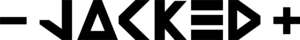

Trade Mark Journal No.2025/013 28 March 2025
UK00004142886 2 January 2025 (5,35)

- Class 5
- Vitamin supplements; Nutritional supplements; Dietary supplements; Probiotic supplements; Herbal supplements; Homeopathic supplements; Calcium supplements; Colostrum supplements; Anti-oxidant supplements; Protein supplements; Dietary supplements consisting of vitamins; Prebiotic supplements; Food supplements; Mineral dietary supplements; Zinc dietary supplements; Mineral nutritional supplements; Dietary and nutritional supplements; Liquid dietary supplements; Vitamin supplements for animals; Protein dietary supplements; Liquid nutritional supplements; Liquid vitamin supplements; Vitamin and mineral supplements; Enzyme dietary supplements; Dietary supplements for animals; Dietary supplements for pets; Anti-oxidant food supplements; Dietary food supplements; Liquid herbal supplements; Dietary supplements for humans; Vitamin and mineral supplements for pets; Protein powder dietary supplements; Dietary supplements in powder form; Vitamin and mineral food supplements; Mineral dietary supplements for animals; Dietary supplements with a cosmetic effect; Dietary supplements for medical use; Mineral dietary supplements for humans; Whey protein dietary supplements; Food supplements for sportsmen; Nutritional supplements consisting primarily of magnesium; Protein supplements for animals; Dietary supplements consisting primarily of magnesium; Vitamin supplement patches; Health-aid foods supplements containing ginseng; Health food supplements made principally of vitamins; Vitamin preparations in the nature of food supplements; Dietary supplement drinks; Nutritional supplements consisting primarily of calcium; Calcium tablets as a food supplement; Dietary supplements consisting primarily of calcium; Nutritional supplements consisting primarily of zinc; Nutritional supplements for livestock feed; Nutritional supplements consisting primarily of iron; Herbal dietary supplements for persons special dietary requirements; Food supplements for veterinary use; Dietary supplements consisting primarily of iron; Dietary supplements promoting fitness and endurance; Multivitamins; Nutritional supplement energy bars; Dietary food supplements used for modified fasting; Health food supplements made principally of minerals; Dietary supplement drink mixes; Mineral supplements for feeding livestock; Food supplements for medical purposes; Activated charcoal dietary supplements; Fitness and endurance supplements; Food supplements in liquid form; Food supplements for non-medical purposes; Dietary supplements for pets in the nature of a powdered drink mix; Protein supplement shakes; Antibiotic food supplements for animals; Health food supplements for persons with special dietary requirements; Diet capsules; Food supplements consisting of amino acids; Dietary supplements for humans not for medical purposes; Nutritional supplement meal replacement bars for boosting energy; Powdered nutritional supplement drink mix; Dietary supplements for human beings; Vitamins and vitamin preparations; Dietary pet supplements in the form of pet treats; Preparations for supplementing the body with essential vitamins and microelements; Capsules for medicines; Multi-vitamin preparations; Food supplements consisting of trace elements; Powdered fruit-flavored dietary supplement drink mix; Preparations of vitamins; Antioxidant pills; Dietary supplemental drinks; Multivitamin preparations; Vitamin tablets.
- Class 35
- Inventorying merchandise; Display services for merchandise; Merchandising; Product merchandising; Online retail store services relating to clothing; Retail services connected with the sale of clothing and clothing accessories; Mail order retail services for clothing accessories; Promoting the sale of fashion goods through promotional articles in magazines; Merchandizing; Online retail store services in relation to clothing; Promoting the sale of goods and services of others through the distribution of printed material and promotional contests; Retail services relating to sporting goods; Promoting the sale of goods and services of others through promotional events; Retail store services in the field of clothing; Product merchandising for others; Wholesale services relating to sporting goods; Retail services in relation to clothing accessories; Promoting the goods and services of others through the distribution of discount cards; Advertising services relating to the sale of goods; Mail order retail services for clothing; Business merchandising display services; Online retail services relating to clothing; Mail order retail services connected with clothing accessories; Advertising services to promote the sale of beverages; Mail order retail services related to foodstuffs; Retail services relating to clothing; Online retail store services relating to cosmetic and beauty products; Procuring of contracts for the purchase and sale of goods; Mail order retail services related to non-alcoholic beverages; Arranging of contracts for the purchase and sale of goods and services, for others; Promoting the goods and services of others through the administration of sales and promotional incentive schemes involving trading stamps; Online retail services relating to luggage; Retail services in relation to clothing; Wholesale services relating to clothing; Promoting the goods and services of others by arranging for sponsors to affiliate their goods and services with sporting activities; Promotion of goods and services through sponsorship; Promoting the goods and services of others through discount card programs; Sales promotions at point of purchase or sale, for others; Retail services in relation to stationery supplies; Promotion of goods and services through sponsorship of sports events; Procurement of contracts for the purchase and sale of goods and services; Retail services in relation to fashion accessories; Advertising particularly services for the promotion of goods; Promoting the goods and services of others by arranging for sponsors to affiliate their goods and services with sports competitions; Mail order retail services for cosmetics; Trade promotional services; Retail services via catalogues related to non-alcoholic drinks; Sales promotion services; Promotion of goods and services for others; Organization of fashion parades for sales promotion purposes; Promotion of goods and services through sponsorship of international sports events; Retail services in relation to bags; Promoting the goods and services of others by arranging for sponsors to affiliate their goods and services with awards programs; Wholesale services relating to automobile accessories; Retail services in relation to pet products; Retail services in relation to sporting equipment; Advertising services for the promotion of beverages.
Gary Hotton